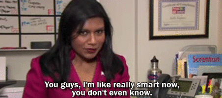
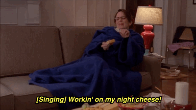
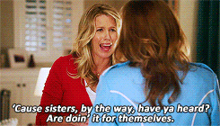

When I'm feeling bummed out or exhausted, I turn to GIFs as a stress reliever. They make me laugh and remind
me to take it easy and relax.
My favorite types of GIFs are:
- Feminist GIFs
- GIFs about strong female friendships
- GIFs from sitcoms with a strong female lead
Maybe you sense a theme about my interests? ; )
The majority of the GIFs come from the following sources:
| Source |
Type of Source |
| Parks and Rec |
Sitcom |
| Unbreakable Kimmy Schmidt |
Sitcom |
| Mean Girls |
Movie |
| 30 Rock |
Sitcom |
| The Office |
Sitcom |
Here are a few examples of my favorites:


